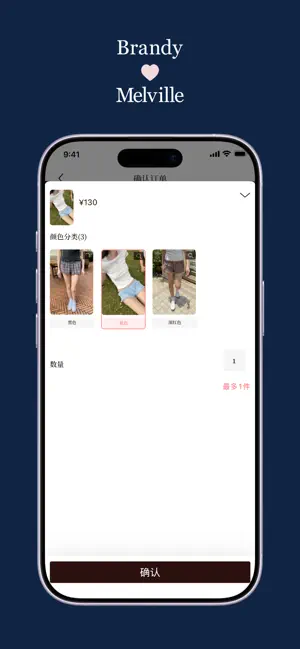

Brandy Melville 入门指南——从零穿出 BM 风，一篇讲透
第一次接触 Brandy Melville 不知道怎么下手？这篇新手友好入门从 BM 风的核心逻辑、五分钟穿出完整 look、到三个最值得先玩的搭配公式，帮你从零搭建第一套 BM 衣橱。
这篇能带你从完全不懂 BM 风到穿出第一套像样的 look，不需要任何穿搭基础——跟着步骤走，五分钟就能搞定。
它到底是干嘛的
把 Brandy Melville 比作衣橱里的那套"万能公式"就好。它不是什么花哨的潮流，而是一套极简、低饱和、上短下高的穿搭模板——就像手机里预装的常用 App，不用折腾配置，拿来就能用，而且几乎不会出错。
BM 风的核心其实只有四条原则：上短下高（拉长腿）、紧松平衡（一件紧身一件宽松）、单色为主加一件印花、低饱和色调（米色、牛仔蓝、卡其、酒红这些）。所有的搭配和单品，都是围绕这四条转的。理解了这一点，后面怎么穿都不会跑偏。
如果你还没见过 BM 的实物，它的官网上面有完整的产品图和款式说明，先逛一圈对版型有个直观印象是个不错的开始。

五分钟上手——从第一次碰 BM 到穿出第一套
别担心复杂，第一次上手就做三件事，每一步都很具体。
第一步：搞懂两个核心单品。BM 全身的造型，90% 都绕不开"短上衣 + 低腰裤"这个组合。短上衣通常衣长在 34cm 左右，刚好卡在腰最细的位置；低腰裤的腰围在肚脐以下 5 到 8cm，搭配短上衣时腰腹会自然露出一点皮肤——这就是 BM 风的视觉灵魂。你不用一开始就买齐所有款式，先确认你能接受低腰的设计，这是入门门槛里最关键的一点。
第二步：选一个基础色系。别一上来就被碎花、格纹这些吸引，第一次穿建议从单色开始。米色、黑色、牛仔蓝这三个颜色随便挑一个当主色，全身不超过两种主色就够了。比如一件米色短针织 + 一条深蓝低腰喇叭裤，配一双白帆布鞋，这样出门不会有人觉得你穿错了。
第三步：套用公式，出门。就用最经典的"短上衣 + 高腰裤"公式，穿一次你就体会到 BM 风为什么火——视觉比例瞬间被拉长，哪怕穿平底鞋也显腿长。如果是春秋季节觉得太单薄，外面套一件宽松的格纹衬衫或者牛仔外套，层次感立刻出来。

买的话可以走官方下载的应用，线上下单比门店方便，而且很多时候门店缺货的款式 App 上反而有货。上海安福路店作为内地首店货最全，但工作日下午去人会少很多，不想排队的话选这个时段。
上手后先玩这三个"功能"
当你已经有了第一套基础款，别急着继续堆单品，先把这三个搭配"玩"熟——每个都能让你的 BM 衣橱立刻丰富起来。
第一个：碎花吊带裙的两种玩法。碎花吊带连衣裙是 BM 的招牌款，小碎花 + 细吊带 + 短款版型，面料大多是 100% 棉。别只把它当单穿的连衣裙，试试单穿配白鞋或者凉鞋去约会；或者外面套一件 BM 格纹衬衫敞开穿，搭配一条微卷的头发，校园感立刻拉满；秋冬甚至可以内搭白色高领毛衣加黑色打底裤，一件裙子穿三季。
你会发现这件单品的复用率高得惊人——而且碎花每季都会更新颜色和图案，想换风格的时候换一条新碎花裙就行，不用全衣橱大换血。搭配变体和更多细节可以翻翻Brand Melville文档。
第二个：紧身内搭 + 宽松外搭的层次感公式。春秋过渡季最实用的穿法，也特别适合对身材不够自信的人。一件紧身吊带或者紧身长袖当内搭，外面套一件 Oversize 卫衣、牛仔外套或者机车皮衣，下装配阔腿裤或者牛仔裙。紧的贴身上、松的罩在外面，既遮盖了手臂和腰腹，又不会显得臃肿。
这时候你会觉得 BM 风其实没有想象中挑身材——只要会用内搭外搭的组合，大部分人都能穿出自己的版本。
第三个：叠戴项链这个点睛之笔。BM 的配饰里项链是最百搭的，银饰叠戴两三颗，搭配任何 BM 风穿搭都不会出错。别小看这个小细节——纯色基础款加一组叠戴项链，整个人的精致度立刻从"休闲"跳到"用心搭配过"，成本不高但效果出奇的好。
小白的三个常见疑问
尺码怎么选？尤其是牛仔裤。BM 牛仔裤的弹性和版型差异很大，不能只看标着的尺码。以最经典的低腰喇叭裤为例，平铺腰围 30cm 是中弹款，拉伸后实际能到 35-38cm。如果你腰围在 62-66cm 之间，选平铺 30cm 的就刚好，穿起来不会勒也不会垮。低弹款要选大一号的平铺尺寸。拿不准的时候去翻一下详细的尺码表，BM 每条裤子的测量数据写得很清楚。
面料差异大吗？ 碎花裙大多是纯棉，透气性好但弹性差，洗多了可能会有轻微变形；格纹半身裙常用 80% 聚酯纤维 + 20% 粘胶，更挺括不容易皱；牛仔裤统一是 99% 棉 + 1% 氨纶，有弹性但又不会太松垮。贴身裙装（吊带裙、内衣类）属于 BM 的不可退货品类，买之前一定要核对好尺寸，不能像买外套那样随便试。
门店没有试衣间怎么办？ 目前只有上海安福路店和香港铜锣湾店还保留试衣间，北京三里屯店和成都两家店都取消了试穿。而且北京、成都门店退款也只返代金券不支持现金。这种情况下，官方 App 线上下单是最省心的替代方案——能看到更完整的产品图、买家晒图，退换货政策也比门店灵活。
写在后面
BM 风的本质就是一套经过验证的穿搭方法论，不是什么遥不可及的潮流符号。从一条碎花吊带裙或者一条低腰喇叭裤开始，套用一两个公式，你很快就能找到自己的 BM 节奏。等基础款穿熟了，再去尝试全身上下同一色系的高级感穿法，或者用一件印花单品做视觉焦点，会发现这套系统的扩展性比想象中强得多。
这套资料在三个仓库都能拿到，从文档维护的角度 GitHub 上更新最快，Gitee 和 GitCode 是国内访问的备份镜像，无论你习惯哪个平台都能找到。